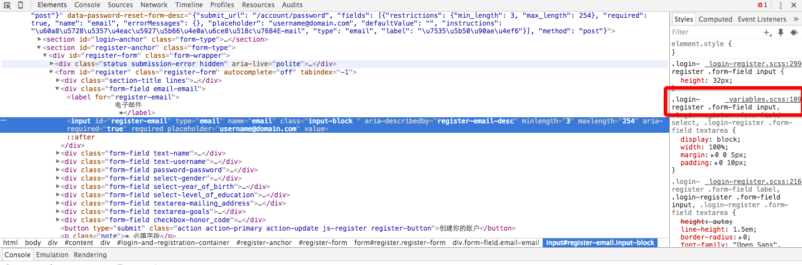
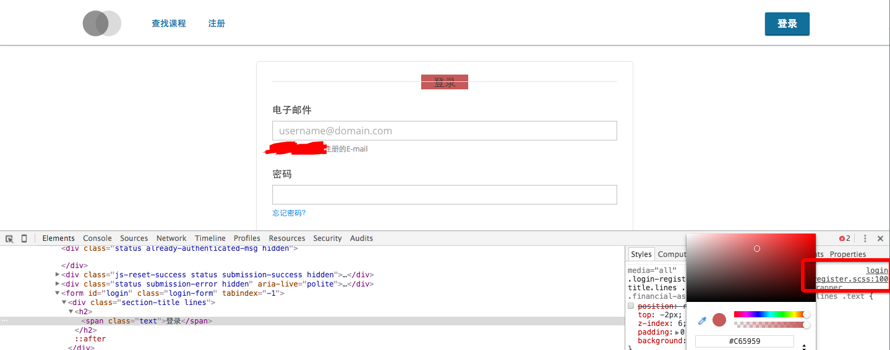
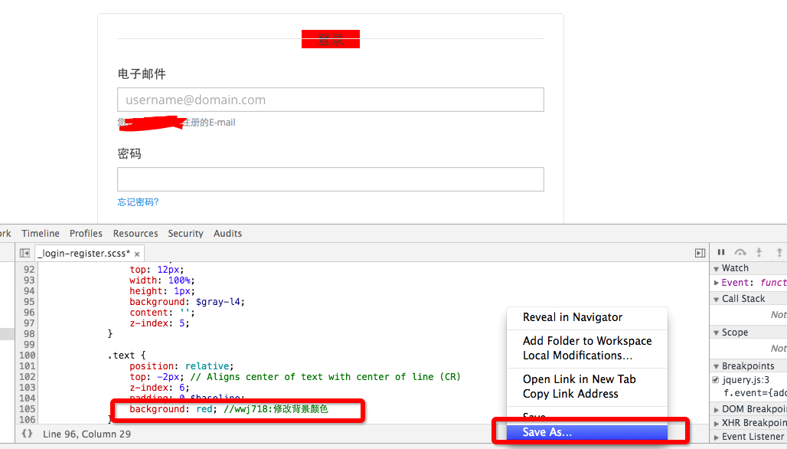

本地开发edx有许多坑，其中一个是open edx的环境搭建十分复杂，而且极其耗费cpu和内存资源。如果每个小伙伴都自行折腾一遍，真是一个不小的精力浪费。而且由于各自平台的不同，出现的错误五花八门，虽然采用vagrant可以部分解决，但vagrant本身又引来了各种蛋疼的问题。
就我个人而言，习惯分布式的协作，团队成员分布在全国各地，甚至国外，为了交流方便，常常围绕一个一致的中心，否则容易各说各的，这个中心包括源码远程仓库和一致的开发环境。
为了让每个人专注在自己的领域，通过分工来达到最大效率，团队中最好有一个全栈(其实就是万金油 囧)来协调大家。全栈未必熟悉具体细节，但对流程应该能整体把握，以便来黏合不同领域和分配任务，划清职责
我们的开发环境
虽然我们的开发环境基于云，但思路是通用的，希望对你的团队也有用
目前我们的开发环境在青云上，按需付费。1核4G内存(swap)就足够了,ip按流量计费。价格很廉价
所有配置由技术负责人完成就行，任务量并不大。
云端开发环境
云上存有一份干净的原生dogwood镜像，在此基础上定制出公司的开发基础版，假设代号为dogwood_base，该基础版包括一同通用的定制。
前后端的开发均从中衍生各自的版本。
代码管理
- 只谈论核心仓库：edx-platform
- 在git服务器上，存有公司定制的open edx源码库，存为私有仓库
dogwood_base是基于named-release/Dogwood的分支- 团队每个成员均有自己的开发分支，命名为
<NAME>/<FEATURE>,<NAME>为成员姓名,<FEATURE>为功能代号 - 技术负责人负责将各个开发代码merge到dogwood_base，当然你也可以采用gitflow工作流
后端开发
后端开发的同学，可能分布在网络各地
tmux可以让你们在一个同个shell会话里协作:参考使用 tmux 结对编程
采用组来做到协同会话
tmux new-session -s groupedsession
tmux new-session -t groupedsession -s mysession
新人入职
只需要给他分发一个镜像就好啦，环境的搭配十分容易。团队内经验的传递也是个影响效率的关键因素，通过tmux，新老员工能容易地结对编程，经验的传递变得容易。使用qq和文档互动性是很低的，而高互动性能明显提高学习效率，tmux，你值得拥有
为前端提供服务
前端同学一般对linux不怎么熟悉，后端同学最好能直接给他们一个一切就绪的环境，因为我自己在处理后端，所以给后端安排的任务会多些
- 负责后端的同学，折腾好配置环境，可以用我的edx_tools,按照这篇教程为前端同学准备好环境：edx前端定制开发工作流,交付给前端的仅仅是个一切就绪的url
- 将前端修改的文件拉取到themes目录，按照theme机制摆放定制文件，参考edx-platform/themes
在云上开发xblock
相比于xblock-sdk，我更倾向于原生的环境，有了云的话，很容易将环境分发给xblock开发者
特性开发（遇到风险）
在开发一些新特性时，有些特性可能会搞坏环境，当这种情况出现，云环境能很好帮到你，做个快照只要你不到一分钟的时间
前端开发
由于云端是外网可访问的，后端同学可以帮助前端构建好所有的环境，所以前端可以专注在前端开发，不需要与环境和服务器打交道（open edx的环境对于后端同学来说头很头疼，实在不该把锅甩给前端，毕竟术业有专攻）
前端同学只需要打开浏览器，输入ip就得到一个干净的开发环境，所需要做的只是用Chrome Dev Tools或者firebug来直接调试scss代码

前端同学的工作流为：
- 配置好chrome/firefox， 使其支持sass调试，参考Using source maps with Sass 3.3
- 直接在chrome里调试,如下如 
- 由于在chrome里的修改只对当然会话有效，我们需要将修改保存到本地，使用git管理，每个修改旁边都应该有注释说明，注释格式为：
// <NAME>:<MESSAGE>